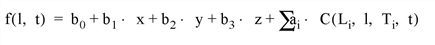

The MIN_CURVE_SURF function interpolates a regularly- or irregularly-gridded set of points, over either a plane or a sphere, with either a minimum curvature surface or a thin-plate- spline surface.
Note: The accuracy of this function is limited by the single-precision floating-point accuracy of the machine.
A minimum curvature spline surface is fitted to the data points described by x , y , and z . The basis function is:
C ( x 0 , x 1 , y 0 , y 1 ) = d 2 log(d k )
where d is the distance between ( x 0 , y 0 ), ( x 1 , y 1 ) and k = 1 for minimum curvature surface or k = 2 for Thin Plate Splines. For n data points, a system of n +3 simultaneous equations are solved for the coefficients of the surface. For any interpolation point, the interpolated value is:
For a sphere the value is:

On the sphere, l and t are longitude and latitude. C(L i ,l, T i ,t) is the basis function above, with distance between the two points, (L i ,T i ), and (l , t), measured in radians of arc length. x, y, and z are the 3D cartesian coordinates of the point (l,t) on the unit sphere.
For a sphere with the CONST keyword set, the value is:
The results obtained with the thin plate spline (TPS) and the minimum curvature surface (MCS) methods are very similar. The only difference is in the basis functions: TPS uses d 2 *alog(d 2 ), and MCS uses d 2 *alog(d), where d is the distance from point (x i ,y i ).
This routine is written in the IDL language. Its source code can be found in the file min_curve_surf.pro in the lib subdirectory of the IDL distribution.
Result = MIN_CURVE_SURF( Z [, X , Y ] [, / DOUBLE ] [, / TPS ] [, / REGULAR ] [, / SPHERE [, / CONST ]] [, XGRID = [xstart , xspacing] | , XVALUES = array ] [, YGRID = [ystart , yspacing] | , YVALUES = array ] [, GS = [xspace , yspace] ] [, BOUNDS = [xmin , ymin , xmax , ymax] ] [, NX = value ] [, NY = value ] [, XOUT = vector ] [, YOUT = vector ] [, XPOUT . YPOUT = array ])
This function returns a two-dimensional floating-point array containing the interpolated surface, sampled at the grid points.
Arrays containing the Z , X , and Y coordinates of the data points on the surface. Points need not be regularly gridded. For regularly gridded input data, X and Y are not used: the grid spacing is specified via the XGRID and YGRID (or XVALUES and YVALUES) keywords, and Z must be a two-dimensional array. For irregular grids, all three parameters must be present and have the same number of elements. If Z is specified as a double-precision value, the computation will be performed in double-precision arithmetic. If the SPHERE keyword is set, X and Y are given in degrees of longitude and latitude, respectively.
Note: The minimum curvature algorithm requires a work array that is M 2 in size, where M is the total number of input data points. On 32-bit platforms, you are therefore limited to input data arrays that have less than approximately 46340 data points, with the exact number depending upon your available memory. Using an input array with too many elements will result in an error.
Set this keyword to fit data on the sphere with a constant baseline, otherwise, data on the sphere is fit with a baseline that contains a constant term plus linear X, Y, and Z terms. This keyword has an effect only if SPHERE is set. See Theory above for the formulae.
Set this keyword to force the computation to be done in double-precision arithmetic. If Z is double precision, the computations will also be done in double precision.
Set this keyword to perform interpolation on the surface of a sphere. The inputs X and Y should be given in degrees of longitude and latitude, respectively.
Set this keyword to use the thin-plate-spline method. The default is to use the minimum curvature surface method.
If set, the Z parameter is a two-dimensional array of dimensions ( n,m ), containing measurements over a regular grid. If any of XGRID, YGRID, XVALUES, or YVALUES are specified, REGULAR is implied. REGULAR is also implied if there is only one parameter, Z . If REGULAR is set, and no grid specifications are present, the grid is set to (0, 1, 2, ...).
A two-element array, [ xstart , xspacing ], defining the input grid in the x direction. Do not specify both XGRID and XVALUES.
An n -element array defining the x locations of Z[ i,j ]. Do not specify both XGRID and XVALUES.
A two-element array, [ ystart , yspacing ], defining the input grid in the y direction. Do not specify both YGRID and YVALUES.
An n -element array defining the y locations of Z[ i,j ]. Do not specify both YGRID and YVALUES.
The output grid spacing. If present, GS must be a two-element vector [ xs, ys ], where xs is the horizontal spacing between grid points and ys is the vertical spacing. The default is based on the extents of x and y . If the grid starts at x value xmin and ends at xmax , then the default horizontal spacing is ( xmax - xmin )/(NX-1). ys is computed in the same way. The default grid size, if neither NX or NY are specified, is 26 by 26.
If present, BOUNDS must be a four-element array containing the grid limits in x and y of the output grid: [ xmin, ymin, xmax, ymax ]. If not specified, the grid limits are set to the extent of x and y .
The output grid size in the x direction. NX need not be specified if the size can be inferred from GS and BOUNDS. The default value is 26.
The output grid size in the y direction. NY need not be specified if the size can be inferred from GS and BOUNDS. The default value is 26.
Use the XOUT keyword to specify a vector containing the output grid x values. If this parameter is supplied, GS, BOUNDS, and NX are ignored for the x output grid. XOUT allows you to specify irregularly-spaced output grids.
Use the YOUT keyword to specify a vector containing the output grid y values. If this parameter is supplied, GS, BOUNDS, and NY are ignored for the y output grid. YOUT allows you to specify irregularly-spaced output grids.
Use the XPOUT and YPOUT keywords to specify arrays that contain the x and y values for the output points. If these keywords are used, the output grid need not be regular, and all other output grid parameters are ignored. XPOUT and YPOUT must have the same number of points, which is also the number of points returned in the result.
; Make a random set of points that lie on a Gaussian:
N = 15
X = RANDOMU(seed, N)
Y = RANDOMU(seed, N)
; The Gaussian:
Z = EXP(-2 * ((X-.5)^2 + (Y-.5)^2))
Use a 26 by 26 grid over the rectangle bounding x and y:
;Get the surface.
R = MIN_CURVE_SURF(Z, X, Y)
Alternatively, get a surface over the unit square, with spacing of 0.05:
R = MIN_CURVE_SURF(Z, X, Y, GS=[0.05, 0.05], BOUNDS=[0,0,1,1])
Alternatively, get a 10 by 10 surface over the rectangle bounding x and y:
R = MIN_CURVE_SURF(Z, X, Y, NX=10, NY=10)
; Make some random data:
z = RANDOMU(seed, 5, 6)
; Interpolate to a 26 x 26 grid:
CONTOUR, MIN_CURVE_SURF(z, /REGULAR)
|
Pre 4.0 |
Introduced |